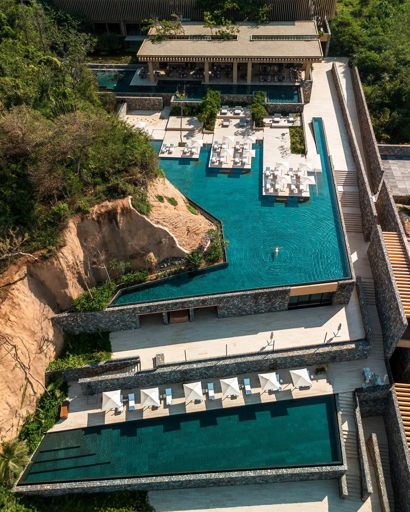

A 3,000-acre private reserve on the Costalegre coast — dramatic clifftop pools, protected wilderness, and barely another soul in sight.
Tamarindo is what happens when Four Seasons is handed an entire stretch of protected coastline: a resort woven into a 3,000-acre private reserve on the Costalegre — the "happy coast" south of Puerto Vallarta that most travelers have never heard of, which is precisely its appeal.
The architecture alone earns the trip — terraced stone, cascading clifftop pools, and rooms that frame the Pacific like gallery pieces. But the real luxury is the emptiness: private beaches, a golf course through the jungle, and a coastline with nothing else on it.
I recommend it for travelers who've done Cabo and Punta Mita and want Mexico with the volume turned all the way down — and for anyone who books hotels for the design.

The clifftop pools. Terraced into the headland with the Pacific below — among the most dramatic pool settings in the Americas.
A reserve, not a resort strip. Nearly all of the 3,000 acres stays wild — you share the coastline with wildlife, not neighbors.
Costalegre itself. Mexico's quietest luxury coast — being early to it is part of the pleasure.
Getting there is part of the deal. It's a drive from Manzanillo or Puerto Vallarta — I'll arrange the transfer so it feels like a scenic prologue, not a chore.
Remote means remote. There's no town to stroll to — this is a stay-on-property trip. If you want restaurants and nightlife nearby, look at my Cabo pages instead.
Pair it well. It combines beautifully with a few nights at Mandarina or Naviva up the coast for a two-stop Pacific itinerary.
The most spectacular new arrival on Mexico's Pacific coast — book it before everyone else finds the Costalegre.
Rates through me are identical to booking direct — the perks are not. As a Fora advisor with Four Seasons preferred partner status, my clients receive a space-available upgrade, daily breakfast, and a hotel credit — plus my direct line to the team on property before and during your stay.
Check Availability